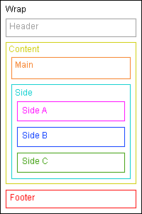

Change this layout by rotating your iPad
When in landscape mode on the Apple iPad this layout has two columns. The main content is in the left column and three smaller sections join to form a right column of content. When the iPad is rotated to a portrait orientation the main content takes the full width of the device and the three smaller sections move down into three columns below. In both the landscape and portrait layouts there is a header at the top and a footer at the bottom.
Both the main content area and the three smaller areas keep exactly the same width in portrait and landscape modes. This means you can be sure each area of content will always look the same even if it has moved to a different position. This is great news if you want to use images within the page, they can take up the full width of their content area and they will always be seen properly.
The div structure
The structural divs in this layout are actually quite simple considering that they are exactly the same for both the two column landscape layout and the single column portrait layout. The whole layout is contained in a wrapping div with three main parts inside; the header, the content, and the footer. The content div contains the main div (for your main content) plus a side div that contains the three side sections.
<div id="wrap">
<div id="header"></div>
<div id="content">
<div id="main"></div>
<div id="side">
<div id="sidea"></div>
<div id="sideb"></div>
<div id="sidec"></div>
</div>
</div>
<div id="footer"></div>
</div>Full Cross-Browser Compatible
This layout not only works on the iPad but it will also work on all the most common web browsers. If this page is viewed in a browser that is wider than 1024px then the layout will appear centered on the page.
Standards compliant browsers that are supported are: Firefox, Safari, Opera, Google Chrome, plus also the non-standard Internet Explorer version 6, 7 and 8. The orientation switching will only work on the iPad, Firefox and Google Chrome.
Problems with this layout
If you're using an iPad this layout will work perfectly but if you are using a different device that has a screen smaller than 1024x 768 pixels then this page will scroll horizontally. There are ways to fix this, for example using JavaScript to dynamically change the layout to accommodate the current screen size but for this demo I wanted it to work without any JavaScript. A more universal layout that works on all screen resolutions plus the iPad and iPhone will be the subject of a future post. Subscribe to my RSS feed and you will be alerted when I post new articles and demos.
100% Pure CSS
No CSS hacks have been used in this layout. A mixture of floats and relative positioning is all that's required for the structural divs. This method works for all common browsers.
No JavaScript
JavaScript is not necessary to make this layout work on the iPad or any other browser. The switch between portrait and landscape layouts is done with pure CSS.
No Images
This layout does not require images. Many CSS website designs need images to colour in the column backgrounds but that is not necessary with this design.
SEO friendly
The higher up content is in your page code, the more important it is considered by search engine algorithms (see my article on link source ordering for more details on how this affects links). To make your website as optimised as possible, your main page content must come before any side columns. This layout does exactly that.
Full length column background colours
In landscape mode the background colours of the two columns will always stretch to the length of the longest column. You can read my article on equal height columns if you want to see how this is done.
Resizable text compatible
This layout is fully compatible with resizable text. Resizable text is important for web accessibility - people who are vision impaired can make the text larger so it's easier for them to read.
Valid XHTML strict markup
The HTML in this layout validates as XHTML 1.0 strict.
Centered menus compatible
This layout is fully compatible with my cross-browser compatible centered menus.